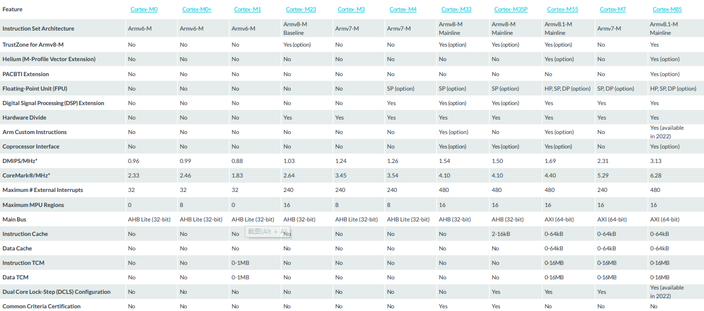

ARM¶
架构简介¶
协同设计¶
版本简介¶
ARMv7¶
Note
ARM公司在经典处理器ARM11以后的产品改用Cortex命名，并分成A、R和M三类，旨在为各种不同的市场提供服务。Cortex系列属于ARMv7架构，这是2010年止ARM公司最新的指令集架构。
ARMv8¶
ARMv8是ARM版本升级以来最大的一次改变，ARMv8的架构继承以往ARMv7与之前处理器技术的基础，除了现有的16/32bit的Thumb2指令支持外，也向前兼容现有的A32(ARM 32bit)指令集，扩充了基于64bit的AArch64架构，除了新增A64(ARM 64bit)指令集外，也扩充了现有的A32(ARM 32bit)和T32(Thumb2 32bit）指令集；

从2011年11月发布ARMv8开始，ARMv8已经走过将近10年时间。ARMv8架构的主要特点是增加对64位指令集的支持，包括目前性能最强的Cortex-X1/A78，都是基于ARMv8.x指令集打造。
ARMv9¶
ARMv9指令集在兼容ARMv8的基础上，提升处理器性能，同时提升安全性、增强矢量计算、机器学习及数字信号处理。基于ARMv9开发的处理器预计将在2022年初正式商用，可能高通下一代骁龙895等SoC。
与上一代的ARMv8相比，ARMv9处理器将不再局限于移动/嵌入式市场，现已经扩展到PC、HPC高性能计算、深度学习等新市场，以满足全球对功能日益强大的安全、人工智能(AI)和无处不在的专用处理的需求。
系列简介¶
从ARMv7开始，架构定义了三大分工明确的系列：
Cortex-A¶
Cortex-R¶
Cortex-M¶
Pipeline |
ISA |
Version |
Interrupts |
DMIPS/MHz |
CoreMark/MHz |
|
|---|---|---|---|---|---|---|
ARMv6-M |
32 |
0.99 |
2.46 |
|||
240 |
1.03 |
2.64 |
||||
240 |
1.24 |
3.45 |
||||
240 |
1.26 |
3.54 |
||||
480 |
1.54 |
4.10 |
||||
480 |
1.69 |
4.40 |
||||
3 |
240 |
2.31 |
5.29 |
|||
480 |
3.13 |
6.28 |